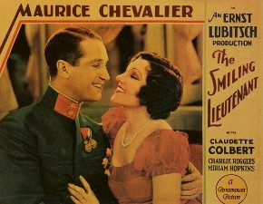

The Smiling Lieutenant

Starring: Maurice Chevalier, Claudette Colbert, Miriam Hopkins
Director: Ernst Lubitsch
Writer: Ernst Lubitsch, Ernest Vajda, Samson Raphaelson
Producer: Ernst Lubitsch
The Smiling Lieutenant is a 1931 American pre-Code musical comedy film directed by Ernst Lubitsch, starring Maurice Chevalier, Claudette Colbert and Miriam Hopkins, and released by Paramount Pictures.
Trivia
- Nominated for: Academy Award for Best Picture.
- The film was not made under pleasant circumstances: the shift to the Astoria, New York, studios accounts for the sense of confinement on set.
- Chevalier described performing – "smiles and cute winks of the eye" – a "mechanical display of technique" due to grief over his mother's death.
- Lubitsch encouraged their dispute that suited their characters on screen.
Previous Showings
10 Runs • 6 Festivals
Original Billings: 1 run (August 24, 1931)
Original Run: August 24, 1931 (Monday - Wednesday)
All runs on record (10):
- August 24, 1931 (Monday - Wednesday)Maurice Chevalier, Claudette Colbert
- October 12 - 14, 1990w/ The Love Parade, One Hour with You
- February 6 - 7, 1992w/ The Love Parade
- October 18 - 20, 1995w/ Death Takes a Holiday
- February 22 - 23, 2001Hollywood Musicals, 1929-1939w/ Monte Carlo
- July 9, 2008Summer 2008 Bette Davis, James Stewart, silent films and more!w/ City Lights
- May 11 - 13, 2011Musicalsw/ Applause
- April 1 - 2, 2015Cary Grant, plus Ernst Lubitsch and Rouben Mamoulianw/ Dr. Jekyll and Mr. Hyde
- February 16 - 17, 2017British and Lubitschw/ Broken Lullaby
- March 13 - 14, 2025Lubitsch, Mamoulian, Sternberg Three Great Directorsw/ The Merry Widow